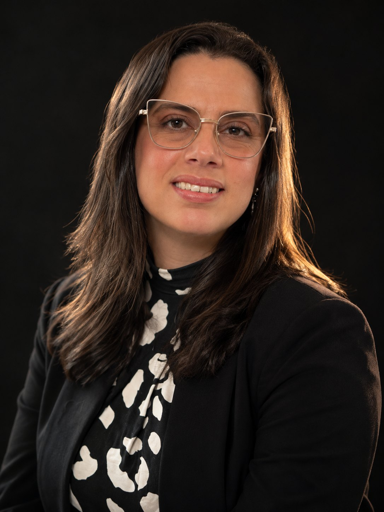

Consultoria estratégica em sustentabilidade
Diagnóstico dos desafios ambientais do seu negócio, priorização do que gera resultado e caminhos de transformação, de ESG a regulamentação.
SUSTENTABILIDADE · BIODEGRADAÇÃO · ECONOMIA CIRCULAR
Consultoria e palestras que conectam a ciência dos materiais à realidade dos negócios, e a diversidade cognitiva à liderança de alta performance.

01 - TRANSFORMAÇÃO01 / QUEM ESTÁ À FRENTE
Minha trajetória profissional é construída na interseção entre negócios internacionais, liderança executiva, inovação e sustentabilidade.
Há mais de duas décadas atuo no desenvolvimento de mercados e na construção de relações estratégicas, sendo mais de dez anos dedicados à indústria de plásticos, bioplásticos e tecnologias voltadas à transformação do setor.
Minha experiência na Eco Ventures Brasil e, atualmente, como Chief Commercial Officer (CCO) da P-Life Japan Inc., consolidou uma atuação internacional que conecta ciência, indústria e estratégia de negócios. Há mais de cinco anos, também atuo como palestrante, participando de eventos e debates sobre sustentabilidade, biodegradação, economia circular, inovação e os desafios da transformação industrial.
A liderança feminina e a neurodivergência também fazem parte dessa trajetória. Como mulher autista em posições de liderança executiva, trago uma perspectiva própria sobre diversidade cognitiva, inclusão, desenvolvimento de talentos e os diferentes caminhos para exercer a liderança. Acredito que ampliar essas discussões é fundamental para construir ambientes profissionais mais diversos, inovadores e preparados para lidar com a complexidade do mundo atual.
Com especialização em Meio Ambiente e Sustentabilidade pela FGV e MBA em Liderança, Inovação e Gestão 4.0 pela PUCRS, combino conhecimento técnico, experiência de mercado e uma visão estratégica que ultrapassa as fronteiras da indústria. Sou também acadêmica titular da Academia Brasileira de Ciências, Artes, História e Literatura (ABRASCI).
É dessa convergência que nasce a BR Folster: um espaço de reflexão, análise e diálogo sobre sustentabilidade, inovação, liderança e transformação. Um lugar para conectar ciência, negócios e diferentes perspectivas, aprofundar discussões e contribuir para que conhecimento e boas ideias se traduzam em decisões e resultados concretos.
Minha trajetória no LinkedIn ↗02 / CONSULTORIA
Cada negócio tem seu contexto.
A conversa começa por entender o seu.
Diagnóstico dos desafios ambientais do seu negócio, priorização do que gera resultado e caminhos de transformação, de ESG a regulamentação.
Orientação técnica sobre materiais, biodegradabilidade e reciclabilidade do plástico, normas e certificações, e as tendências que vão definir o setor.
Apoio a empresas que querem incluir, desenvolver e reter talentos neurodivergentes, com a perspectiva de quem é autista e atua em liderança de alta performance. Conversas com lideranças, RH e equipes sobre diversidade cognitiva na prática.
Experiência em expansão comercial, distribuidores e parcerias na América Latina, Ásia, Oriente Médio, África e Europa para empresas que querem crescer com soluções de menor impacto.
03 / PALESTRAS
Para empresas, feiras, congressos
e encontros de liderança.
Biodegradação, economia circular e inovação na nova geração dos plásticos, com ciência explicada para quem decide.
A trajetória de uma mulher em posições de liderança na indústria e o que muda quando as organizações abrem espaço para outras vozes.
Como uma mulher autista chega e se sustenta em posições de liderança executiva global. Diversidade cognitiva como vantagem para inovação e decisão, e o que as empresas podem fazer para desenvolver e reter talentos neurodivergentes.
UMA PERSPECTIVA PARA O SEU NEGÓCIO
04 / IDEIAS EM CIRCULAÇÃO
Uma seleção de publicações, entrevistas
e conversas sobre o futuro da indústria.
05 / O PRÓXIMO PASSO
Para consultoria, palestras ou uma primeira conversa sobre o seu negócio, escolha o canal que preferir.